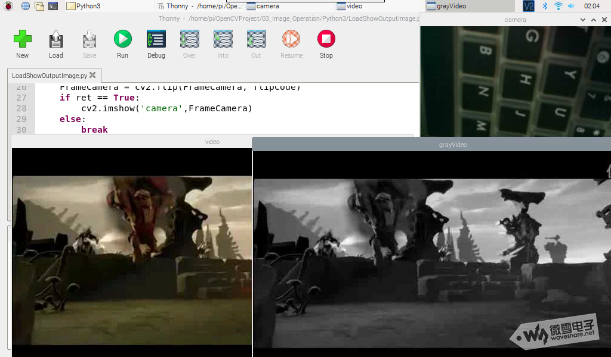

图像与视频载入、显示、输出¶
1. 图像的载入,显示，与输出¶
1.1 Python3¶
现在通过一个demo来认识Python3中图像的载入，显示，与输出操作：
import cv2
import numpy as np
# default read as BGR picture
img1 = cv2.imread('color.jpg')
# show it in the window
cv2.imshow('image1',img1)
# write it to local disk
cv2.imwrite('image1.jpg',img1)
# read as grayscale picture
img2 = cv2.imread('color.jpg',cv2.IMREAD_GRAYSCALE)
# show it in the window
cv2.imshow('image2',img2)
# write it to local disk
cv2.imwrite('image2.jpg',img2)
cv2.waitKey(0)
cv2.destroyAllWindows()
实际运行效果如下图所示，在运行后，在python文件路径下可找到image1.jpg，image2.jpg文件，且image2.jpg是灰度图像。
1.2 C++¶
C++源码类似如下：
#include<opencv2/core/core.hpp>
#include<opencv2/highgui/highgui.hpp>
using namespace cv;
int main(void)
{
Mat img1=imread("color.jpg");
namedWindow("image1");
imshow("image1",img1);
imwrite("image1.jpg",img1);
Mat img2=imread("color.jpg",IMREAD_GRAYSCALE);
namedWindow("image2");
imshow("image2",img2);
imwrite("image2.jpg",img2);
waitKey(0);
return 0;
}
2 视频，摄像头的载入，显示¶
2.1 Python3¶
现在通过一个demo来理解Python3中视频，摄像头的载入与显示操作,且在该操作中，包含了摄像头的翻转，摄像头开窗定义等。
同时还包含了视频的载入，显示操作；注意，OpenCV只支持读取avi格式的视频，并且不包含音频。
import cv2
capCamera = cv2.VideoCapture(0)
if(not capCamera.isOpened()):
print("can't open this camera")
exit(0)
capVideo = cv2.VideoCapture('demo.avi')
if(not capVideo.isOpened()):
print("can't open this video")
exit(0)
# set the image width and height
capCamera.set(cv2.CAP_PROP_FRAME_WIDTH, 320)
capCamera.set(cv2.CAP_PROP_FRAME_HEIGHT, 240)
## image flip setup
# * horizontal flip: flipCode = 1
# * Vertical flip: flipCode = 0
# * horizontal & Vertical flip: flipCode = -1
flipCode = -1
while(True):
# handle for the camera
ret, FrameCamera = capCamera.read()
FrameCamera = cv2.flip(FrameCamera, flipCode)
if ret == True:
cv2.imshow('camera',FrameCamera)
else:
break
# handle for the video
ret, FrameVideo = capVideo.read()
if ret == True:
cv2.imshow('video',FrameVideo)
FramVideoGray = cv2.cvtColor(FrameVideo,cv2.COLOR_BGR2GRAY)
cv2.imshow('grayVideo',FramVideoGray)
else:
break
# handle for exit
if (cv2.waitKey(1)) == ord('q'):
break
capCamera.release()
cv2.destroyAllWindows()
实际运行效果如下图所示：

2.2 C++¶
其C++源码类似如下：
#include<iostream>
#include<opencv2/opencv.hpp>
#include<opencv2/highgui/highgui.hpp>
#include<opencv2/imgproc/imgproc.hpp>
using namespace std;
using namespace cv;
int main()
{
VideoCapture capCamera(0);
if(!capCamera.isOpened())
{
cout<<"can't open this camera"<<endl;
return -1;
}
VideoCapture capVideo("demo.avi");
if(!capVideo.isOpened())
{
cout<<"can't open this video"<<endl;
return -1;
}
capCamera.set(CAP_PROP_FRAME_WIDTH, 320);
capCamera.set(CAP_PROP_FRAME_HEIGHT, 240);
Mat FrameCamera,FrameVideo;
// image flip setup
// horizontal flip: flipCode = 1
// Vertical flip: flipCode = 0
// horizontal & Vertical flip: flipCode = -1
int flipCode = -1;
while(1)
{
//read by operator ">>"
capCamera>>FrameCamera;
flip(FrameCamera,FrameCamera,flipCode);
imshow("camera",FrameCamera);
//read by function read
bool ret = capVideo.read(FrameVideo);
if(ret == true)
{
imshow("video",FrameVideo);
cvtColor(FrameVideo,FrameVideo,COLOR_BGR2GRAY);
imshow("grayVideo",FrameVideo);
}
else
{
break;
}
if(char(waitKey(1)) == 'q')
{
break;
}
}
capCamera.release();
capVideo.release();
destroyAllWindows();
return 0;
}
3 视频，摄像头的输出¶
本节主要讲解视频，摄像头的输出，即，将视频流数据保存到本地。
OpenCV只支持生成avi格式的视频，且生成的视频文件不能大于2G，且不能添加音频。
3.1 Python3¶
关于视频输出，主要用到VideoWriter对象，而视频的输入，主要用到VideoCapture对象，因此，视频的输出(视频录制)的主要过程就是将VideoCapture中读入的图片写入到VideoWriter当中，在给出demo程序之前，先给出VideoWrite的使用方法：
# Encode the video format as MJPG
fourcc = cv2.VideoWriter_fourcc('M','J','P','G')
print(fourcc)
# Config the framrate to 20 frame per second
# fps = capCamera.get(cv2.CAP_PROP_FPS)
fps = 20.0
print(fps)
# Config the Window Size by camera
frameSize = (int(capCamera.get(cv2.CAP_PROP_FRAME_WIDTH)),int(capCamera.get(cv2.CAP_PROP_FRAME_HEIGHT)))
print(frameSize)
# Create the VideoWrite Object
outCamera = cv2.VideoWriter('outputCamera.avi',fourcc,fps,frameSize)
首先，在写入视频的时候，必须先指定视频的编码格式，这里我们指定为MJPG格式。
fourcc = cv2.VideoWriter_fourcc('M','J','P','G')
接着，须指定视频的帧率跟窗口大小。
# Config the framrate to 20 frame per second
# fps = capCamera.get(cv2.CAP_PROP_FPS)
fps = 20.0
print(fps)
# Config the Window Size by camera
frameSize = (int(capCamera.get(cv2.CAP_PROP_FRAME_WIDTH)),int(capCamera.get(cv2.CAP_PROP_FRAME_HEIGHT)))
print(frameSize)
最后，初始化VideoWriter的时候，将这些参数传入到其中。并指定输出视频文件的名称。
# Create the VideoWrite Object
outCamera = cv2.VideoWriter('outputCamera.avi',fourcc,fps,frameSize)
接下来，将给出源码：
import cv2
import numpy as np
#--------------------------------
# set for camera
capCamera = cv2.VideoCapture(0)
capCamera.set(cv2.CAP_PROP_FRAME_WIDTH,640)
capCamera.set(cv2.CAP_PROP_FRAME_HEIGHT,480)
# set for camera output
fourcc = cv2.VideoWriter_fourcc('M','J','P','G')
print(fourcc)
# fps = capCamera.get(cv2.CAP_PROP_FPS)
fps = 20.0
print(fps)
frameSize = (int(capCamera.get(cv2.CAP_PROP_FRAME_WIDTH)),int(capCamera.get(cv2.CAP_PROP_FRAME_HEIGHT)))
print(frameSize)
outCamera = cv2.VideoWriter('outputCamera.avi',fourcc,fps,frameSize)
#--------------------------------
#--------------------------------
# set for video
capVideo = cv2.VideoCapture('demo1.avi')
# set for video output
fourcc = int(capVideo.get(cv2.CAP_PROP_FOURCC))
print(fourcc)
fps = capVideo.get(cv2.CAP_PROP_FPS)
print(fps)
frameSize = (int(capVideo.get(cv2.CAP_PROP_FRAME_WIDTH)),int(capVideo.get(cv2.CAP_PROP_FRAME_HEIGHT)))
print(frameSize)
outVideo = cv2.VideoWriter('outputVideo.avi',fourcc,fps,frameSize)
#--------------------------------
choose = input("Please input C or V:\n")
# Process for camera
if choose == 'C':
while (capCamera.isOpened()):
ret,frameCamera = capCamera.read()
outCamera.write(frameCamera)
cv2.imshow("frameCamera", frameCamera)
if cv2.waitKey(1) == ord('q'):
break
# Process for video
elif choose == 'V':
while(capVideo.isOpened()):
ret,frameVideo = capVideo.read()
if ret:
outVideo.write(frameVideo)
cv2.imshow("framVideo", frameVideo)
if cv2.waitKey(1)==ord('q'):
break
else:
print("Please input right order")
capCamera.release()
capVideo.release()
cv2.destroyAllWindows()
运行该代码后，将首先提示用户输入选项C(Camera)或V(Video)：当输入C之后，将打开摄像头，录制视频，并将视频保存到本地；当输入V之后，将打开本地的视频，将本地的视频重新写入到本地。
3.2 C++¶
其C++源码类似如下：
#include<iostream>
#include<opencv2/opencv.hpp>
#include<opencv2/highgui/highgui.hpp>
#include<opencv2/imgproc/imgproc.hpp>
using namespace std;
using namespace cv;
int main()
{
//set for camera
//---------------------------------------
VideoCapture capCamera(0);
if(!capCamera.isOpened())
{
cout<<"can't open this camera"<<endl;
return -1;
}
capCamera.set(CAP_PROP_FRAME_WIDTH, 640);
capCamera.set(CAP_PROP_FRAME_HEIGHT, 480);
int fourcc = VideoWriter::fourcc('M','J','P','G');
printf("%d\r\n",fourcc);
//double fps = capCamera.get(CAP_PROP_FPS);
double fps = 20.0;
Size frameSize = Size((int)capCamera.get(CAP_PROP_FRAME_WIDTH),(int)capCamera.get(CAP_PROP_FRAME_HEIGHT));
printf("%d,%d\r\n",(int)capCamera.get(CAP_PROP_FRAME_WIDTH),(int)capCamera.get(CAP_PROP_FRAME_HEIGHT));
VideoWriter outCamera;
outCamera.open("outputCamera.avi",fourcc,fps,frameSize);
//---------------------------------------
//set for video
//---------------------------------------
VideoCapture capVideo("demo.avi");
if(!capVideo.isOpened())
{
cout<<"can't open this video"<<endl;
return -1;
}
fourcc = VideoWriter::fourcc('M','J','P','G');
printf("%d\r\n",fourcc);
//fps = capCVideo.get(CAP_PROP_FPS);
fps = 20.0;
frameSize = Size((int)capVideo.get(CAP_PROP_FRAME_WIDTH),(int)capVideo.get(CAP_PROP_FRAME_HEIGHT));
printf("%d,%d\r\n",(int)capVideo.get(CAP_PROP_FRAME_WIDTH),(int)capVideo.get(CAP_PROP_FRAME_HEIGHT));
VideoWriter outVideo;
outVideo.open("outputVideo.avi",fourcc,fps,frameSize);
//---------------------------------------
char choose;
printf("Please input C or V \r\n");
scanf("%c",&choose);
Mat frameCamera, frameVideo;
if(choose == 'C')
{
while(capCamera.isOpened())
{
capCamera>>frameCamera;
outCamera.write(frameCamera);
imshow("frameCamera", frameCamera);
if(char(waitKey(1)) == 'q')
{
break;
}
}
}
else if(choose == 'V')
{
while(capVideo.isOpened())
{
bool ret = capVideo.read(frameVideo);
if(ret)
{
outVideo.write(frameVideo);
imshow("framVideo", frameVideo) ;
}
if(char(waitKey(1)) == 'q')
{
break;
}
}
}
else
{
printf("Please input right order");
}
capCamera.release();
capVideo.release();
destroyAllWindows();
return 0;
}